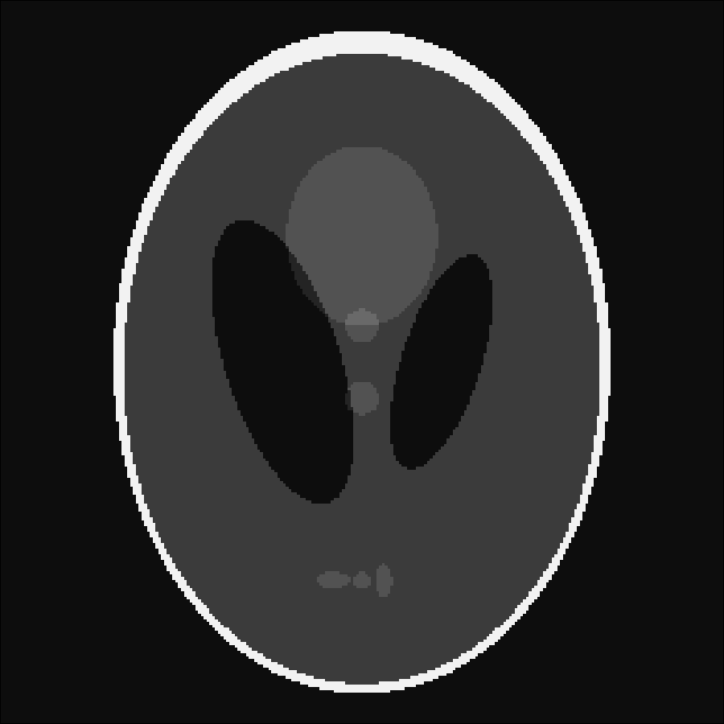

Getting Started
Throughout the entire documentation we assume that you have loaded MRIReco as well as PyPlot via
using PyPlot, MRIRecoIts important to load these packages in that order, since otherwise PyPlot will not work correctly on some systems.
All examples discussed in the documentation can be found in the package source code in the folder
MRIReco/docs/src/examplesThis folder is located in ~/.julia/packages or ~/.julia/dev depending if you have checked out MRIReco for development or not. You can call the first example by entering into the Julia REPL:
include(joinpath(dirname(pathof(MRIReco)),"../docs/src/examples/exampleRadial.jl"))which should open a plotting window as is outlined in the following example.
Basic Example
We will start with a very simple example and perform simple simulation and reconstruction based on a shepp logan phantom. The program looks like this
# image
N = 256
I = shepp_logan(N)
# simulation parameters
params = Dict{Symbol, Any}()
params[:simulation] = "fast"
params[:trajName] = "Radial"
params[:numProfiles] = floor(Int64, pi/2*N)
params[:numSamplingPerProfile] = 2*N
# do simulation
acqData = simulation(I, params)
# reco parameters
params = Dict{Symbol, Any}()
params[:reco] = "direct"
params[:shape] = (N,N)
Ireco = reconstruction(acqData, params)We will go through the program step by step. First we create a 2D shepp logan phantom of size N=256. Then we setup a dictionary that defines the simulation parameters. Here, we chose a simple radial trajectory with 402 spokes and 512 samples per profile. We use a gridding-based simulator by setting params[:simulation] = "fast"
After setting up the parameter dictionary params, the simulation is performed by calling
acqData = simulation(I, params)The result simulation function outputs an acquisition object that is discussed in more detail in the section Acquisition Data. The acquisition data can also be stored to or loaded from a file, which will be discussed in section File Handling.
Using the acquisition data we can perform a reconstruction. To this end, again a parameter dictionary is setup and some basic configuration is done. In this case, for instance we specify that we want to apply a simple NFFT-based gridding reconstruction. The reconstruction is invoked by calling
Ireco = reconstruction(acqData, params)The resulting image is of type AxisArray and has 5 dimensions. One can display the image object by calling
imshow(abs.(Ireco[:,:,1,1,1]))Alternatively one can store the image into a file, which will be discussed in the section on Images.
The original phantom and the reconstructed image are shown below

We will discuss reconstruction in more detail in the Reconstruction section. Simulation will be discussed in more detail in the Simulation section.